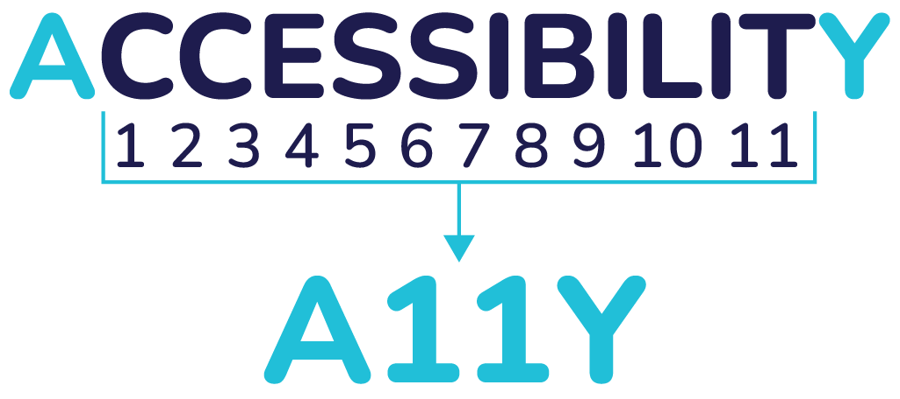
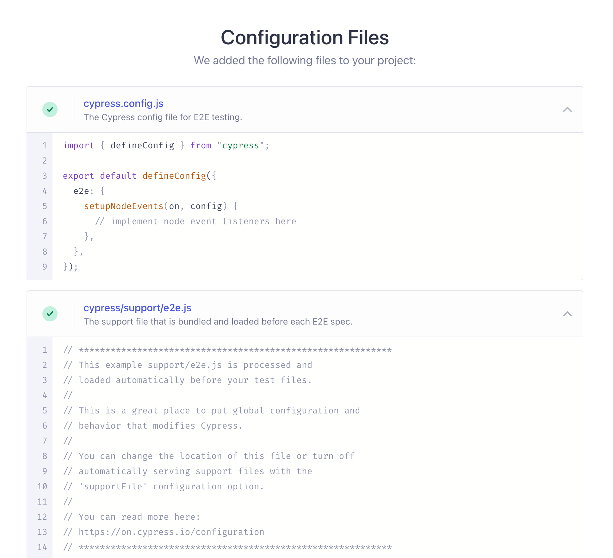
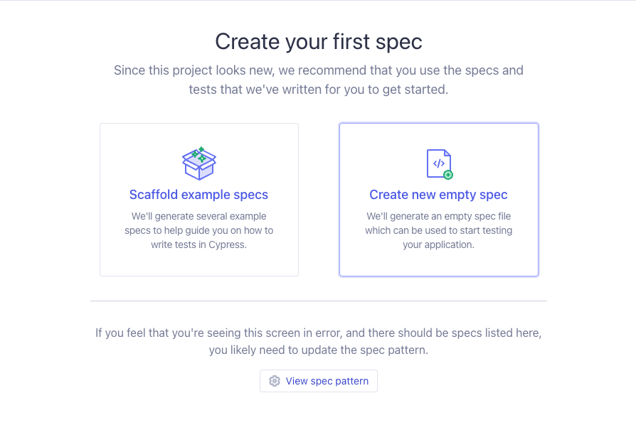
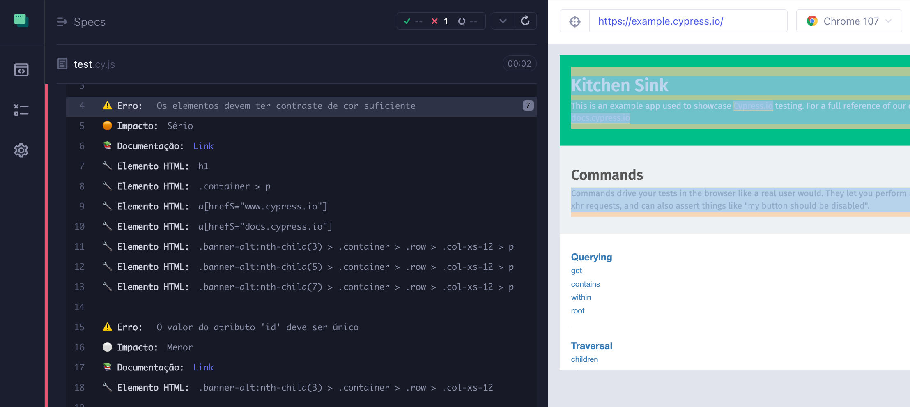
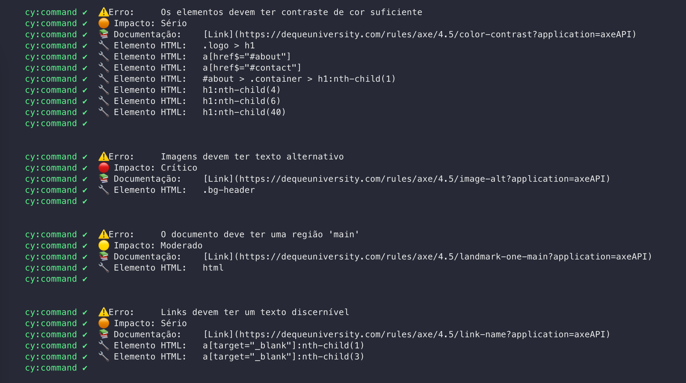

O qué o A11Y?
“A11Y” é considerado um numerônimo que significa acessibilidade, com o número 11 representando a contagem de letras entre a letra A e a letra Y da palavra em inglês “accessibility”.
O que é o A11Y-Analyzer?
É uma ferramenta de testes de acessibilidade para auxiliar as equipes a desenvolverem interfaces web acessiveis desde o início do projeto. Tem o intuito de mostrar onde estão os possíveis erros e mostrar a documentação com sua resolução.
Como usar?
O código fonte do analisador está armazenado no servidor do NPM, com isso é possível fazer sua instalação por linha de comando no terminal, sendo necessário já possuir as ferramentas NodeJS e NPM instaladas. Os seguintes comandos devem ser executados para proceder com a instalação:
npm install --save-dev a11y-analyzer
Este comando instala apenas o código fonte do analisador, também é necessário a instalação das outras bibliotecas que compõem as dependências do projeto com o seguinte comando:
npm install --save-dev axe-core cypress cypress-axe cypress-terminal-report http-server start-server-and-test
Com o analisador e as dependências instaladas, o próximo passo é fazer a configuração do projeto para que tudo funcione corretamente, como é apresentado na próxima seção.
Este é o passo mais importante para o bom funcionamento do analisador no projeto, pois é necessário que alguns arquivos e pastas sejam configurados de maneira específica como é demonstrado a seguir. Inicialmente deve ser executado o comando para configurar a biblioteca de testes Cypress dentro do projeto:
npx cypress open
Então é aberta uma janela de diálogo onde preferencialmente deve ser selecionada a opção de testes E2E, como mostra a figura.

A seguir uma próxima tela é apresentado com os arquivos necessários para execução dos testes que a biblioteca gera automaticamente, como mostra a figura.
A seguir, basta clicar no botão continuar e selecionar um navegador para começar os testes. É aberto então o navegador escolhido onde é possível criar casos de testes já nesta interface como mostra a próxima figura ou podem ser criados manualmente dentro da pasta cypress/e2e dentro do projeto. Como o analisador vai ficar responsável por executar os testes, não há necessidade de criar testes nesse momento, portanto essa interface pode ser fechada.
Após os arquivos do Cypress serem criados é necessário fazer alguns ajustes para a integração com o analisador e as outras bibliotecas dentro do projeto. O arquivo a partir da pasta raiz cypress/support/e2e.js deve ser atualizado com a linha mostrada abaixo para incluir os comandos específicos do analisador:
import 'a11y-analyzer'
No arquivo cypress.config.js na pasta raiz do projeto de ser atualizado com o seguinte código:
const { defineConfig } = require("cypress");
module.exports = defineConfig({
env: {
"hideElements": true // To hide elements like XHR requests
},
e2e: {
baseUrl: 'http://localhost:8080', // Choose you localhost
screenshotOnRunFailure: false, // Don't take screenshots
video: false, // Don't record videos
setupNodeEvents(on, config) {
require('cypress-terminal-report/src/installLogsPrinter')(on);
},
},
});
Para usar a importação do tipo require, certifique-se de que não haja um "type": "module", dentro do seu arquivo package.json e, se estiver usando Typescript e importações ES6, certifique-se de que esModuleInterop esteja habilitado.
Para execução do analisador em um projeto web se faz necessário que a interface já esteja sendo compilada e exposta em uma porta local da máquina ou hospedada em algum servidor. Para executar os testes na interface do projeto é preciso criar um arquivo dentro da pasta cypress/e2e. Na notação de testes do cypress cada caso de teste é executado pelo método it(), dentro dele é necessário passar o comando do analisador cy.analyseA11y(), pois é ele o responsável por executar a bateria de testes de acessibilidade.
Também é possível passar algumas configurações por parâmetro para o comando, cada configuração possui um comportamento diferente e serve para um objetivo específico. Elas são apresentadas a seguir de forma separada somente para fins mais didáticos, porém podem ser feitas todas em um único comando se o desenvolvedor assim necessitar.
A seguir alguns dos principais exemplos de uso e configurações especificas que podem ser feitas com o analisador:
No primeiro caso de teste é atribuído apenas um parâmetro que especifica o endereço da interface que deve ser testada, esse pode ser tanto um apontamento para o servidor local ou um endereço na web, ele é o único parâmetro obrigatório que deve ser atribuído. Sendo assim, todos os tipos de critérios de acessibilidade serão avaliados tornando esse cenário o mais completo pois nenhuma regra está sendo ignorada ou excluída.
it('Should log any accessibility failures', () => {
cy.analyseA11y('https://example.cypress.io');
})
No segundo caso de testes é apresentado a possibilidade de se especificar um elemento na interface onde se queira fazer um teste exclusivo, eliminando assim os testes no resto da interface.
it('Should execute ONLY specific elements on the page', () => {
cy.analyseA11y('https://example.cypress.io', '.container', null);
})
No terceiro caso de teste é apresentado a configuração para que se exclua tal elemento da interface, sendo assim o analisador verificará todo o resto.
it('Should exclude specific elements on the page', () => {
cy.analyseA11y('https://example.cypress.io', { exclude: ['.banner'] }, null);
})
No quarto caso, é especificado um nível de impacto de acessibilidade que se deseja testar, há quatro níveis: minor, moderate, serious e critical. Escolhendo os dois últimos como no exemplo, alertas e erros de nível menor não serão exibidos.
it('Should ONLY include rules with serious and critical impacts', () => {
cy.analyseA11y('https://example.cypress.io', null, { includedImpacts: ['critical', 'serious'] });
})
No quinto caso, é possível também selecionar o tipo de regra que se deseja excluir da verificação, como por exemplo contraste de cor.
it('Should exclude specific accessibility rules', () => {
cy.analyseA11y('https://example.cypress.io', null, {
rules: {
'color-contrast': { enabled: false }
}
});
})
Por fim, o sexto caso apresenta como é possível configurar o analisador para que teste de acordo com os níveis de criticidade de acordo com a WCAG.
it('Should ONLY include rules with these levels of conformance', () => {
cy.analyseA11y('https://example.cypress.io', null, {
runOnly: {
type: 'tag',
values: ['wcag2a', 'wcag2aa']
}
});
})
Resultados
Assim que é executado tanto no terminal como na interface de testes do Cypress, o analisador executa seus testes predefinidos, onde interage com o sistema em que foi instalado. Quando são detectadas violações de acessibilidade, ele emite um erro sinalizando que o teste falhou, com uma mensagem contendo um resumo do erro, o tipo de impacto, link para a documentação e os elementos HTML que contém o erro na interface web do sistema. Na interface de testes, enquanto os comandos de teste são executados, é possível ver as interações com a interface em tempo real.
Por fim, tudo que foi encontrado é listado, onde é possível ver quantos testes foram executados, quantos passaram, quantos falharam e quanto tempo eles levaram para serem executados.
